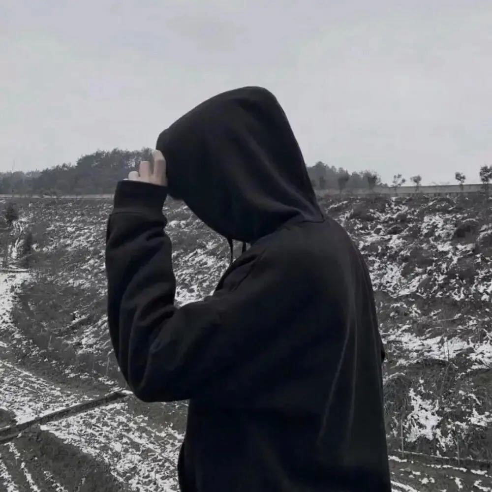

Digital Pioneer & Independent Creator
探索极简主义与模块化技术架构在构建独立站时的融合。不仅仅是视觉的净化，更是对自身数字内容主权的重申，从协议层开始建立秩序。
深入分析分布式技术与传统个人博客的结合可能。如何在去中心化的秩序中寻找自我表达的空间，而不仅是被动接受算法的馈赠。在开放协议上重构秩序。
关于脚本、API 与自定义工具集如何重塑日常工作。不仅仅是提高效率，更是一种思维方式的转变，将重复性劳动转化为独立系统的自主运作。
在数据随时可能被抹去的时代，如何通过 GitHub Pages 与 IPFS 等协议组合，实现自身内容的持久化保存。一种对个人主权的保护机制。